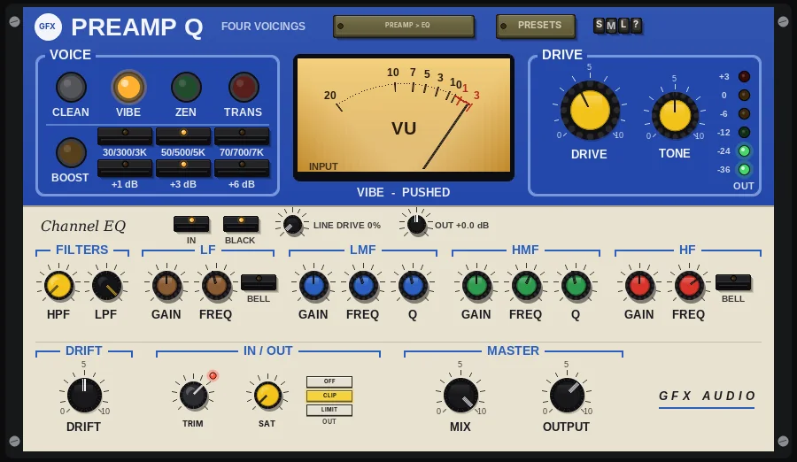

Preamp Q
The four-voicing colour preamp with a four-band console channel EQ on its cream strip.

Overview
Preamp Q is the Preamp with a full channel EQ added. The blue top half is the preamp: four voicings from clean to fuzz, an EQ boost in front of the drive, gentle program-dependent compression (sag) and a VU meter. The cream strip underneath is a four-band console channel EQ with high- and low-pass filters, shelf-or-bell ends, two swept mids with Q, a BROWN or BLACK voicing and a line amp.
The ORDER key decides which comes first: the EQ after the preamp, to shape the driven sound, or in front of it, so the EQ changes what gets driven. The panel shows the unit the signal meets first on top.
Reach for it for
- Warmth, crunch or fuzz with a proper EQ to shape it
- Shaping a source before it hits the drive (EQ > PREAMP)
- A complete channel strip: drive, EQ and output limiting in one
- Bass, guitars, keys and drums that need colour as well as tone
Controls
VOICE
- CLEAN
- No drive and no sag. TONE does nothing here; use it with BOOST as a clean EQ preamp.
- VIBE
- The 60s pedal preamp: a low-mid lift, soft, uneven (even-harmonic) saturation and a top end that rolls off from about 18 kHz down to 7 kHz as DRIVE rises. TONE does nothing in this voicing - the drive sets the top end.
- ZEN
- Gentle, symmetrical saturation with a smooth, amp-like breakup.
- TRANS
- Single-transistor drive: lopsided, it starts biting earlier and gets furry when pushed.
- BOOST
- Switches the EQ boost in or out. It sits in front of the drive, so a boost also drives the voicing harder.
- 30/300/3K, 50/500/5K, 70/700/7K
- The three frequencies the boost lifts at once, each a decade apart: low, mid and high together.
- +1 dB, +3 dB, +6 dB
- How much each of the three bands is lifted.
VU meter
Shows the level going into the preamp, with 0 VU at -18 dBFS. Under it, the panel names the voicing and how hard it is working: WARM, PUSHED or SATURATED, by the DRIVE setting (CLEAN reads NO DRIVE).
DRIVE
- DRIVE
- How hard the voicing is driven, 0 to 100% (40% by default). It also deepens the sag compression in front of it.
- TONE
- A top-end roll-off for ZEN and TRANS, sweeping its corner from about 1.2 kHz (dark) to 14 kHz (open), 0 to 100%.
- OUT lights
- Six lights showing the output peak level: -36, -24, -12, -6, 0 and +3 dB.
Channel EQ
- IN
- Switches the four EQ bands in or out (in by default). The HPF and LPF stay in.
- BROWN / BLACK
- The EQ voicing; the key shows the one in use (BLACK by default). BROWN: broad bells and soft shelves. BLACK: bells that tighten as you boost or cut (proportional Q), and shelves with a small opposite dip just inside the corner.
- LINE DRIVE
- Pushes the EQ's line amp into gentle saturation, 0 to 100%. It is level matched, so it adds colour rather than volume.
- OUT
- The EQ's output level, -12 to +12 dB.
FILTERS
- HPF
- A high-pass filter, 18 dB per octave, from OFF (fully left) up to 400 Hz. Removes rumble and low-end mud.
- LPF
- A low-pass filter, 12 dB per octave, from 3 kHz up to OFF (fully right). Tames hiss and harsh top.
LF
- GAIN
- -15 to +15 dB.
- FREQ
- 30 to 450 Hz (100 Hz by default).
- BELL
- Off (default): a low shelf. On: a bell centred on FREQ.
LMF
- GAIN
- -15 to +15 dB.
- FREQ
- 200 Hz to 2.5 kHz (600 Hz by default).
- Q
- The bandwidth, 0.4 to 3 (1 by default). Higher is narrower. In BLACK the bell also narrows as you boost or cut more.
HMF
- GAIN
- -15 to +15 dB.
- FREQ
- 600 Hz to 7 kHz (2.5 kHz by default).
- Q
- The bandwidth, 0.4 to 3 (1 by default).
HF
- GAIN
- -15 to +15 dB.
- FREQ
- 1.5 to 16 kHz (8 kHz by default).
- BELL
- Off (default): a high shelf. On: a bell centred on FREQ.
Drift
- DRIFT
- 0 to 100%. 50% is the standard amount; 100% is twice that, 0 turns it off. It makes the saturation's lopsidedness (bias) wander slowly and the sag compression breathe in and out. Higher settings also make the wander move faster.
IN / OUT
- TRIM
- Input level before anything else, from -24 to +12 dB. A single click on the knob (without dragging) switches GUARD on or off; its LED at the knob's upper right is dark when GUARD is off, red when it is on, and glows brighter while it is catching peaks.
- GUARD
- On by default. Gently eases very hot sources down towards about -18 dBFS average and catches fast peaks above -6 dBFS, so loud sources never overdrive the plugin. It never boosts quiet sources.
- SAT
- Band saturation on the way out, 0 - 100%: only the lows and highs are saturated (the mids stay clean), with a soft curve that loosens as the level rises.
- OFF / CLIP / LIMIT
- The final stage: nothing, a soft clipper (no latency), or a lookahead limiter that holds the peaks at -0.3 dBFS (3 ms latency, compensated by REAPER). The CLIP key flashes red while the clipper is working.
MASTER
- MIX
- Dry / preamp balance, 0 to 100% (100% by default). Lower settings blend the clean signal back in for parallel drive. The EQ is not part of the blend: it is applied to the whole signal, before or after.
- OUTPUT
- Output level, -24 to +12 dB.
The header
- ORDER (PREAMP > EQ / EQ > PREAMP)
- Each press swaps the order of the two units; the key shows the current order and the unit the signal meets first is drawn on top. PREAMP > EQ shapes the driven sound; EQ > PREAMP changes what goes into the drive, so EQ boosts also push the voicing harder.
- PRESETS, arrows and display
- PRESETS (or a click on the display) opens the list of factory presets; the ◄ / ► keys step through them. A preset sets the voicing, DRIVE, TONE, the EQ boost, the drift amounts and MIX; the channel EQ, ORDER, OUTPUT and the input and output stages are left as they are. The last entry resets the preamp, MIX, OUTPUT and the IN / OUT strip to their defaults (the channel EQ, ORDER and the DRIFT dial stay as they are).
- S / M / L
- Panel size: small, medium or large. The panel also scales to fit the plugin window.
- ?
- Opens a pop-up with the design credit, the GFX website address and the address of this manual. Click anywhere to close it.
Presets
- Vibe Warm
- VIBE at 35% drive: gentle warmth and weight.
- Vibe Driven
- VIBE at 85% drive with a little more drift: thick and saturated.
- Zen Edge
- ZEN at 35% drive: just on the edge of breakup.
- Zen Crunch
- ZEN at 70% drive with a slightly brighter TONE.
- Transistor Grit
- TRANS at 50% drive with TONE a little dark.
- Transistor Fuzz
- TRANS at 95% drive with a darker TONE: full fuzz.
- Console Lift
- CLEAN with BOOST on at 70/700/7K, +3 dB: a clean, broad lift.
- Mid Push into Zen
- ZEN at 55% drive with the 50/500/5K boost pushing into it.
- Breathing Valve
- VIBE at 55% drive with heavy bias and sag drift, so the colour moves.
- Reset all to defaults
- The preamp, MIX, OUTPUT and the input and output stages back to their starting values.
Tips
- Use the VU: aim for the needle around 0 with TRIM before you set DRIVE, so the voicings react as designed.
- With EQ > PREAMP, use the HPF to stop the low end driving the voicing into mud, then boost the mids you want to break up.
- With PREAMP > EQ, the LPF and a little HMF cut tame the fizz of TRANS at high drive.
- For parallel drive on drums or bass, turn DRIVE up and MIX down to 30 - 50%.
- TONE only works in ZEN and TRANS; in VIBE the drive itself darkens the top.
File: gfx-preamp-q.jsfx